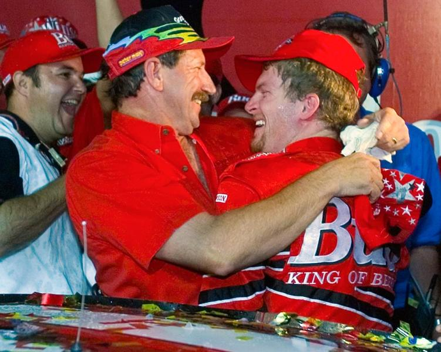
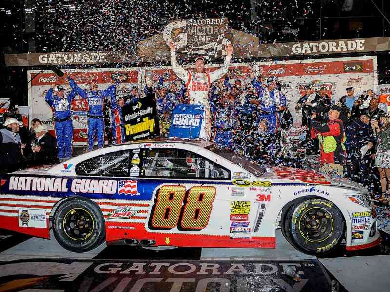
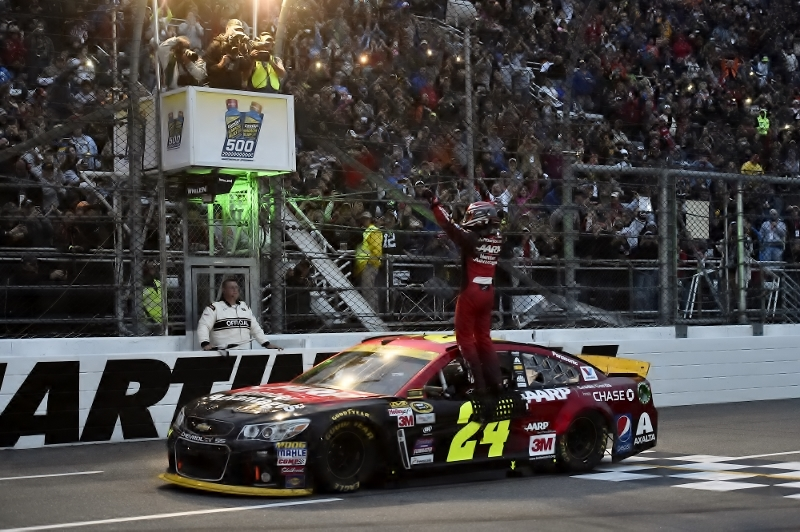
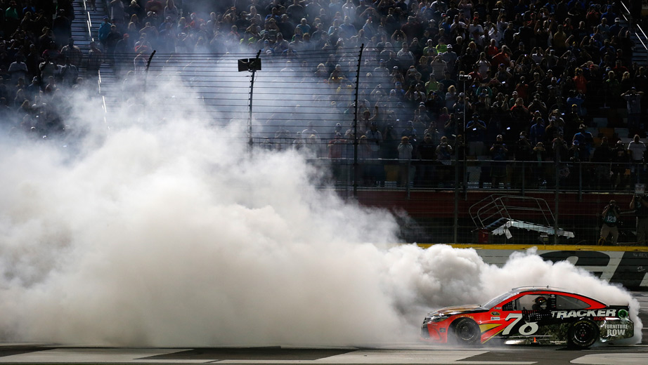
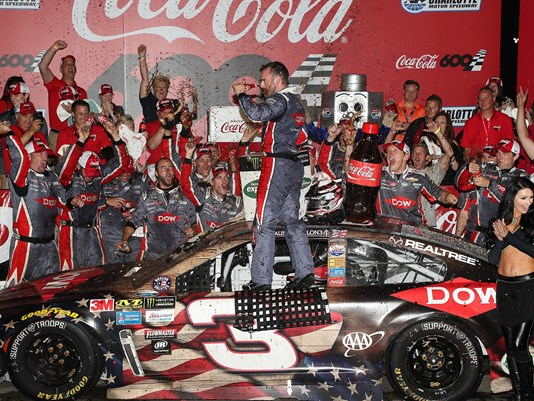

2000 The Winston
Charlotte, North Carolina

My first Winston Cup race, The Winston. There are no championship points to be earned in this exhibition race and the winner takes home half a million dollars. The race is split into two 30 laps segments followed by a final 10 lap segment for the money. Sitting in the Turn 2 Diamond Tower I watched Dale Earnhardt Jr run down Dale Jarrett in the final segment before passing him with 2 to go to take home the checkered. I had been to qualifying as well as a few Busch series races but this was the real deal. The pinnacle of stock car racing coupled with a field of all-stars not worried about points racing. Strictly racing for cash. This night would begin a string of 11 consecutive trips to the event.
2014 Daytona 500
Daytona Beach, Florida

My first trip to the Great American Race was quite eventful to say nonetheless. Austin Dillon started the race from the pole in the 3 car. This marked the first time the 3 car had started a race since Dale Earnhardt's fatal crash in turn 4 of the 2001 Daytona 500. After 39 laps, the race was red flagged as storms moved into the area. After a tornado warning, several inches of rain, and 6 hours of becoming soaking wet the race was restarted shortly before 9pm. With 13 laps to go, Dale Earnhardt Jr took the lead and wouldn't look back as he captured the 2nd Daytona 500 of his career, breaking a 55 race winless streak. It truly was a once in a lifetime experience, as it was my first Daytona 500 and I got to see an Earnhardt go to victory lane.
2015 Goody's Headache Relief Shot 500
Martinsville, Virginia

This particular race happens to be the most special to me. It was my first trip to Martinsville, and my first time seeing Cup cars at a short track. Jeff Gordon had always been my favorite driver and this was his last season before retirement. As the next 3 races were in Texas, Phoenix, and Miami this would probably be my last chance to see him race. (I eventually did see Gordon race one more time in his last NASCAR race filling in for Dale Jr. at Martinsville while he recovered from a head injury) Joey Logano led most of the race in dominant fashion and appeared to be unbeatable until getting into an accident with Matt Kenseth on lap 454. (Footage of the accident can be seen here. After the track was cleared Gordon took the lead and held on until a late caution with 7 laps to go. It was getting very dark and I was starting to worry NASCAR may call the race before the scheduled distance due to Martinsville not having lights. However, they restarted with 2 laps to go and Jeff Gordon held off Jamie McMurray to secure his 93 career victory, his 9th at Martinsville. This is the only time I saw Jeff Gordon win and it will always hold a very special place in my heart.
2016 Coca-Cola 600
Charlotte, North Carolina

The Coca-Cola 600 is one of NASCAR's marquee events. It's the longest race of the year and also takes place on the same day as the Indy 500 and the Monaco Grand Prix. This 600 would mark my third time attending the event and prove to be the most impressive performance I've ever seen by a driver. Martin Truex Jr. started the race on the pole and proceeded to lead 392 of the next 400 laps, or 588 miles of the scheduled 600. Never in NASCAR history has a driver even come close to leading so many miles. Many would consider Truex's performance to be a perfect race; I concur.
2017 Coca-Cola 600
Charlotte, North Carolina

My 4th trip to the 600 happens to be my first under NASCAR's new stage racing format as well as my most recent race attended. Kevin Harvick started on the pole but lost the lead on the following lap to the 18 of Kyle Busch. A few laps later, I became disheartened as my driver, Chase Elliot, wrecked right in front of our seats in Turn 1. Kyle Busch ended up winning the stage and picked up an extra playoff point. Stage 2 began and it didn't take long for Martin Truex Jr. to take the lead after Harvick won the race off pit road. Nobody could match the speeds of the 78 and Truex drove away to another stage win. Stage 3 began with another 40 odd laps of Truex leading and the rest of the field playing catchup until caution fell over the racetrack. Truex once again jumped out on the restart until the final caution of the stage saw Stenhouse stay out on old tires to take the lead. On the following restart, Hamlin jumped out front and drove away to a stage victory. The final stage saw Kyle Busch take the lead with 94 laps remaining. Busch and Truex drove nose to tail for the next 22 laps until caution flew for the final time. Restarting with 67 laps remaining, Truex and Busch drove away from the field once again. As cars cycled through pit stops halfway through the run, Jimmie Johnson and Austin Dillon stayed out and conserved fuel. Jimmie Johnson appeared to be on his way to his 9th win at Charlotte, when he ran out of gas with 2 laps to go. Austin Dillon assumed the lead and drove on to his first NASCAR cup victory. This win carried special signifigance as it was the first time the 3 car had been to victory lane since Dale Earnhardt won in the black Goodwrench Chevrolet at Talladega in 2000. I had never seen the 3 car win a race before, but it felt good to see the 3 car back in victory lane that night in Charlotte.
©2017 Paul Robson